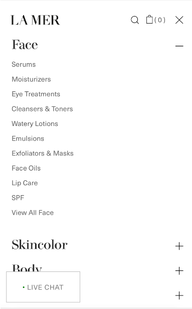

The Center for AI Safety (CAIS) released a statement on Ai risk on the 30 of May 2023 concerning the potential risks AI may pose to human existence. The short statement is mainly concerned with the future of AI development and how it may pose as great a risk to humanity as nuclear war. The statement, while remaining fairly ambiguous in comparison to the statement made by Future of Life (which I will speak a bit about later), has garnered a lot of attention as well as the signatures of many notable names within the AI development community, including some of the leading scientists involved in its development such as Geoffery Hinton, who is often referred to as the Godfather of AI as well as some more corporate figures such as Open AI’s Sam Altam who is the CEO of the company responsible for ChatGPT and Dall-E, Bill Gates, Daniela Amodei president and co-founder of Anthropic, DeepMind’s Lila Ibrahim and other such prominent figures.
The CAIS is a nonprofit organisation based in California, that is concerned with reducing the risks that AI can have on society. Apart from getting important signatures in support of their statement it looks like the organisation is mainly concerned with researching the harms of AI and its potential risks. The CAIS goes into potential AI risks by giving 8 examples of them on their website. The first being weaponization which they describe as “repurpose AI to be highly destructive, presenting an existential risk in and of itself”. AI is already being used for military purposes and that has always been one of the factors in its development (). The CAIS also mentions AI’s possible use in development for chemical weapons while in a Verge article from 2022 as AI used in the development of usually beneficial drugs was used in an experiment to show how easily AI could become dangerous if employed for malicious tasks (Eliacik 2022), the AI in question came up with 40 thousand possible chemical weapons and while there is no evidence to suggest that these chemicals will be used the fact that now we know they can exist may be a problem within itself (Calma 2022)(Urbina et al. ). Another area of risk that CAIS talks about is proxy gaming which essentially boils down to the way in which algorithms and AI are designed to achieve objectives that may have negative effects on human beings. An example of this is how algorithms are used on social media with the goal of keeping your attention on an app or platform for as long as possible which sometimes conflicts with what is best for a person and may potentially affect one's mental health. The next risk is enfeeblement which is the risk or rather potential risk of humanity becoming too dependent on AI systems like in E. M. Forster's short story The Machine Stops.
The next area of concern as discussed by the CAIS is emergent goal, which concerns the idea of humanity losing control over the AI systems they create. This is one of the issues that Future of life also talks about and it is something that Geoffery Hinton discusses in a podcast(). The next area of risk CAIS mentions is the potential for AI to manipulate humans in order to achieve its goals which also ties into the idea of misinformation which is also a risk mentioned. The last two examples given are “value lock-in” and “power seeking behaviours” which both concern issues around AI development itself such as the idea of what having a monopoly on such technology would mean and how monetary or economic motivations surrounding AI development have the potential to cause massive amounts of harm.
All the examples that are given by the CAIS are very much relevant and valid in that they are real risks that we are seeing unfold in real time and while the examples may be helpful in educating people on the risks that AI could poses to humanity an interesting thing to note about the statement is its overall lax tone as well as the absence of any proposed action or call for change. It would seem that the CAIS is more of the idea that these are problems that we need to be thinking about now but that we will need to implement solutions at a later stage. This significantly differs from the tone that the Future of Life Institution takes, their statement calls for a 6 month pause or government imposed moratorium on the development of more advanced AI systems in order to establish regulations and policies around AI to mitigate potential risks and harms. This statement, while being significantly longer than the one released by CAIS, also has a much more urgent and realistic tone when it comes to the issue at hand. The CAIS’ statement does however specify that they are more concerned about the possible existential threats AI poses. Overall though it does seem like both the CAIS’ statement as well as the Future of Life statement have been met with criticism. As articulated in an article released by The Guardian people question how sincere these concerns for humanity are (Paul, 2023). It is a concern that the companies that are developing these technologies are stirring up fear in order to distract from the present developments unfolding in AI, this doesn’t really make sense once you consider the risks that the CAIS outline, mainly the potential risks of “power-seeking behaviour” (CAIS, 2023) by actors who have something to gain from AI.
The discussion around AI and ethics is a discussion that needs to be an ever evolving conversation, as these systems are being rapidly developed and this comes with emergent risks. Countries need to be establishing policies and regulations on AI, not on the development of it as this seems borderline impossible considering that doing so could lead to power imbalances within the industry which could create tensions between countries as there is seemingly no way to implement a pause that can be completely verified as pointed out by Slavoj Žiźek (Žeźek, 2023), as AI becomes more prevalent in human life it is necessary to be considering the potential harms and issues that could arise from a variety of factors. Companies developing these technologies need to have regulations placed on them concerning the transparency of their systems, they need to be held accountable for the products that they are creating and any harms that emerge due to their technologies (CraftHub Events, 2019).
It would be careless and irresponsible to not be thinking about the potential existential risk AI poses to humanity as more jobs become automated or as jobs become obsolete due to AI. There are a lot of necessary things that need to be considered if we wish AI to be beneficial to humanity in the long run. That said, the effects of AI and the widespread implementation of algorithms need to be seriously considered as it increasingly becomes an issue. The potential harms of misinformation or AI fabricated information (Sadeghi & Arvanitis, 2023) and how it affects human knowledge has huge destructive potential and there needs to be more urgent discussions around this particular issue because not only will it affect humanity in the long run but it also really does poses a massive threat. Take for example the case of Cambridge Analitica and its use of user data to manipulate users (Cadwalladr & Graham-Harrison, 2018). Safety around issues of privacy and user data should be the more talked about issues when it comes to the establishment of policy and regulations, however I can see why this presents an issue, companies in this case aren’t motivated to fix these issues because it benefits them. While the CAIS and the Future of Life Institute do raise valid concerns about the future of AI development and they do so in a way that is easily understandable more emphasis should be put on the current issues unfolding, the use of AI generated content for content farms (Sadeghi & Arvanitis, 2023), the spreading of misinformation, algorithms using user data to increase engagement or ad revenue or manipulate users to behave in certain ways (Cadwalladr & Graham-Harrison, 2018). While AI has massive potential to be highly beneficial to humanity, regulations around privacy, accountability and transparency need to be put in place urgently. Preventing AI risk should be an “evolutionary process towards safety” (Hendrycks & Mazeika, 2022, p. 36) these discussions should have been taking places before the these systems/ algorithms became so widespread as admitted in the X-Risk Analysis for AI Research “which requires starting early and iterative refinement” (Hendrycks & Mazeika, 2022, p. 36).
Ai risk: Cais (2023) AI Risk | CAIS. Available at: https://www.safe.ai/ai-risk#Power-Seeking%20Behavior
Bhuiyan, J. (2023) OpenAI CEO calls for laws to mitigate ‘risks of increasingly powerful’ ai, The Guardian. Available at: https://www.theguardian.com/technology/2023/may/16/ceo-openai-chatgpt-ai-tech-regulations
Cadwalladr, C. and Graham-Harrison, E. (2018) Revealed: 50 million facebook profiles harvested for Cambridge Analytica in major data breach, The Guardian. Available at: https://www.theguardian.com/news/2018/mar/17/cambridge-analytica-facebook-influence-us-election
Calma, J. (2022) AI suggested 40,000 new possible chemical weapons in just six hours, The Verge. Available at: https://www.theverge.com/2022/3/17/22983197/ai-new-possible-chemical-weapons-generative-models-vx
Cantrill, B. (2019) Bryan Cantrill: Andreessen’s corollary: Ethical dilemmas in software engineering - craft conf 2019, YouTube. Available at:https://www.youtube.com/watch?v=0wtvQZijPzg
Colomé, J.P. (2023) Why are the people who pushed for artificial intelligence now signing so many doomsday manifestos?, EL PAÍS English. Available at: https://english.elpais.com/science-tech/2023-06-03/why-are-the-people-who-pushed-for-artificial-intelligence-now-signing-so-many-doomsday-manifestos.html
Eliaçık, E. (2022) Guns and codes: The era of AI-wars begins, Dataconomy. Available at:https://dataconomy.com/2022/08/17/how-is-artificial-intelligence-used-in-the-military
Gosálvez, P. (2023) Very human questions about Artificial Intelligence, EL PAÍS English. Available at: https://english.elpais.com/science-tech/2023-05-29/very-human-questions-about-artificial-intelligence.html
Harper, J. (2023) Pentagon requesting more than $3B for AI, JADC2, DefenseScoop. Available at:https://defensescoop.com/2023/03/13/pentagon-requesting-more-than-3b-for-ai-jadc2/#:~:text=The%20DOD’s%20fiscal%202024%20budget,Domain%20Command%20and%20Control%20initiatives.
Hendrycks, D. and Mazeika, M. (2022) ‘X-Risk Analysis for AI Research’, arXiv, pp. 1–36. Available at:https://arxiv.org/pdf/2206.05862.pdf#page=13
Mauro, G. and Schellmann, H. (2023) ‘there is no standard’: Investigation finds AI algorithms objectify women’s bodies, The Guardian. Available at: https://www.theguardian.com/technology/2023/feb/08/biased-ai-algorithms-racy-women-bodies
Paul, A. (2023a) Big Tech’s latest AI doomsday warning might be more of the same hype, Popular Science. Available at: https://www.popsci.com/technology/ai-warning-critics/
Paul, A. (2023b) There’s a glaring issue with the AI Moratorium Letter, Popular Science. Available at:https://www.popsci.com/technology/ai-open-letter-longtermism/
Paul, K. (2023) Robot takeover? not quite. here’s what ai doomsday would look like, The Guardian. Available at:https://www.theguardian.com/technology/2023/jun/03/ai-danger-doomsday-chatgpt-robots-fears
Pause giant AI experiments: An open letter (2023) Future of Life Institute. Available at: https://futureoflife.org/open-letter/pause-giant-ai-experiments/
Sadeghi, M. and Arvanitis, L. (2023) Rise of the newsbots: AI-generated news websites proliferating online, NewsGuard. Available at:https://www.newsguardtech.com/special-reports/newsbots-ai-generated-news-websites-proliferating/
Urbina, F., Lentzos, F., Invernizzi, C. et al. Dual use of artificial-intelligence-powered drug discovery. Nat Mach Intell 4, 189–191 (2022). Available at:https://doi.org/10.1038/s42256-022-00465-9
Wakefield, J. (2022) Deepfake presidents used in Russia-ukraine war, BBC News. Available at:https://www.bbc.com/news/technology-60780142
Žižek, S. et al. (2023) The post-human desert: By Slavoj žižek, Project Syndicate. Available at:https://www.project-syndicate.org/commentary/ai-post-human-future-by-slavoj-zizek-2023-04
As my case study I have chosen the SKOON website. SKOON is a South African skin care and beauty company. Here is the link to their website: SKOON. The website aims to sell the SKOON brand of skin care products as well as provide any additional information its customers/ potential customers may need when considering to buy from them. The website also provides customers with news regarding upcoming products, sales or discounts on products as well as the brand's values, certifications, articles regarding skin care and standard contact information. Customers can also order products directly from their website, this is one of the website's primary functions. Upon the first look at the website it appears that the primary target audience is young South African women, probably those in their early and late twenties who have an interest in the natural/ holistic skin care trends, most of the models used on the site are young women and in their skin care log section there are articles are about acne. Although in general the target audience is just women. This essay will look at and make an evaluation on both the UX and UI as well as take into consideration issues of ethics pertaining to ideas of interactive design.
When evaluating the UX of the website usability and functionality will be considered. This is what the home page looks like when you open it:
All the navigation appears at the top of the page in the navigation bar when assessing the website on a computer provided the window is full screen. However when using a mobile device or when viewing the page in let's say half screen, all the navigation is presented in a side panel that must be pressed or clicked to be viewed. The same information or options are shown in both causes and the icon that users need to press in order to see the navigation is one that is conventionally used; the website assumes that the user will easily be able to determine what is meant. This is the icon used to indicate the navigation:
This is how the navigation appears when assessing the site on a mobile device:
In both cases the same information is given however there are a few differences in the way a user would interact with the navigation. In the full screen the user is only required to hover their mouse over each category to view what is contained in each category however on mobile or a different sized window it would require the user to specifically click on the arrow icons that appear next to each category to gain more information about what each one contains. While this adheres to the idea of the 3-click rule (Zeldman, 2001) the use of arrows in this context leaves room for user error because of how the layout is structured. A user may assume that in order to see what more information they can simply click on the category and the information will be present but what happens instead is that the user is taken to the categories page. This isn’t good because making unnecessary errors has the potential to affect the users feelings and behaviours when continuing to interact with the site (Preece et al.,2015, p15). Exiting the navigation requires users to click outside of the panel, this is a pretty standard and is used on multiple other platforms, therefore pretty intuitive provided the user has interacted with other online stores/ service providers before. In order to return to the home page the user would need to click on the SKOON logo that appears at the top of every page, this is a bit ambiguous because there is no information that indicates that this is an interactive element however it is not an uncommon practice an as the the target audience is presumably fairly young there is a high chance they would be familiar with this convention.
Another important element to consider when assessing the usability of the site is the search functions. The SKOON website indicates its search function by using the standard search icon:
As this is standard practice it is clear what is meant, therefore the correct information is effectively conveyed to the user. When viewing the site full screen on a computer however the user is presented with a search bar but upon clicking it it opens the same panel as it would on mobile or different sized window, instead of allowing the user to immediately type in their search. In terms of the actual search functionality itself; once the user clicks on the search icon they are presented with a search bar as well as a list of the site's most popular searches but upon clicking on the links provided the user will be directed to an error screen, it appears that none of the 5 links given work despite the fact that each product is stocked on the website if they are searched for specifically. This error negates the convenience of listing the popular products at all and could lead customers to believe that these products are unavailable. The error screen itself however easily allows the user to return to the home screen. Here is an image of the error screen:
The site is able to recognise keywords or vague prompts in order to provide the user with the appropriate product. The search function appears to only be applicable to products, users are unable to search for the other information given on the site such as beauty articles, potential sales or discounts or for example the terms of service. The search function is purely for the use of finding a product, if the user requires access to other information they will need to navigate the page to find it themselves.
Another aspect of the website to consider is the overall layout or the way that content is organised on the site. All the store details can be found at the top of the page even in the navigation bar everything to do with the actual products themselves is presented first. This is understandable as the website's primary function is to sell SKOON products. Further down the page information is given about the brand and its values, charities the brand contributes to. There is a video player that when pressed plays a video ad for some of their products. Further down there is a list of articles about skin care and such. Right at the bottom of the webpage users are provided with other general information such as the terms of service, privacy policy, contact information, links to the brands social media and the option to input their email (the user is also presented with a pop up that allows them to input their email when they first visit the site.) Putting contact information as well as other information (terms, privacy policy, about, ect.) at the bottom of the site is a common practice when it comes to online stores so users may expect it to be presented in this way; this is in accordance with Jakob’s Law (Nielsen,n.d.).
Next to evaluate is the UI. UI or user interface is the point at which human computer interaction occurs(). Things to consider are the aesthetics and whether the site is visually pleasing as it is stated in the Hassenzahl and Tractinsky reading that beauty is an important factor in ensuring that the user has a satisfying experience (Hassenzahl et al. 2006, p5). Taking a look at the SKOON home page and its layout, the element that the user will come across first is the panel of cycling images displaying products that the company is currently promoting as well as discounts they are offering. Each image has a main title that is clearly indicated by the use of font sizes and emphasis. Because the items are cycling at a set speed, in order to read the rest of the information the user is required to click. This is both good and bad. Good because it allows the user to quickly determine whether the items in question are of interest and bad because the speed at which the images cycle at may be too fast for some customers to read this has the potential to cause unnecessary stress as it can feel a bit like a quick time event in a video game especially because the duration of time is indicated. The site uses visual hierarchy to indicate important information to the viewer. When a user presses an image the cycle stops, it's unclear whether this is intentional or not because the timer still runs but once it is complete it doesn’t change. The typography of the site is cohesive and readable in most cases except in the below examples:
Where the colour of the font makes the words difficult to read because it does not contract enough with the background. This is not an issue on a mobile device. The general colour palette of the website is consistent and in accordance with the brand's image utilising mostly earthy tones as well as whites and greys which give the site a clean and minimal feel. On a computer each element of the site is focused and easily clickable however on mobile in order to move between items or articles the user is required to scroll horizontally to items this leaves room for error as it is easy to make a mistake. A possible solution to this could be to make each item snap into focus when scrolling this eliminates the possibility of a user scrolling in between items. On a computer buttons respond when the mouse is hovered over them and in a full screen window more information about both icons and products is given. Similarly when hovering over products the user is presented with the option to quickly view, add to the wishlist and choose options that do not apply when viewing in a window of a different size or mobile.
In consideration of the ethics of the site and its interactive design, there are only a few areas of concern. One thing is that shortly after arriving on the site the user is greeted with a pop up message indicating that the visitor will receive a free gift if they purchase from the site.
The intention of this would be to further encourage the user to spend money on the site however when moving to the checkout after adding other items there is no indication that the item has be added to the cart furthermore there is no way to remove the pop up so it ends up hindering the view of the site, while this is not an issue on computer it maybe irritating when using a smaller device. After spending some time on the site another two pop ups appear asking for the user's email. When both pop ups are closed an icon offering 10% of remains at the bottom of the page, it appears there on all pages except when making the payment.
Similarly there is a message at the top of the page telling the user that they will get free shipping if their purchase is over a certain amount. The language used makes it seem like this offer is only available for a limited time which may influence users to buy more than they originally set out to.
Another concern is the lack of transparency surrounding privacy policies, most notably the site does not ask users for their cookie preferences off the bat and in order for a user to find this information they would have to scroll to the bottom of the website and read through the privacy policy themselves.
In conclusion SKOON’s website has a clean and somewhat minimal design, for the most part effectively adhering to Jakob’s law as the experience mirrors the conventions of other skin care product websites. There are a few usability concerns one being the arrow icons in the navigation bar a possible solution to this could be if the arrow was changed to a plus icon to communicate that there are other subcategories as seen on other skin care websites such as La Mer: 
In conclusion SKOON’s website has a clean and somewhat minimal design, for the most part effectively adhering to Jakob’s law as the experience mirrors the conventions of other skin care product websites. There are a few usability concerns one being the arrow icons in the navigation bar a possible solution to this could be if the arrow was changed to a plus icon to communicate that there are other subcategories as seen on other skin care websites such as La Mer:
Goldberg, P.(n.d.). Crash Course In User Design [+] Interactive Design (Lecture slides). University of the Witwatersrand, Johannesburg.
Hassenzahl, M., & Tractinsky, N. (2006). User experience - a research agenda. Behaviour & Information Technology, 25(2), 91-97.
Nielsen, J. (1994) 10 usability heuristics for user interface design, Nielsen Norman Group. Available at: https://www.nngroup.com/articles/ten-usability-heuristics/
Nielsen, J. (2011) Top 10 mistakes in web design, Nielsen Norman Group. Available at: https://www.nngroup.com/articles/top-10-mistakes-web-design/
Preece, J., Rogers, Y., & Sharp, H. (2015). Interaction design: Beyond human-computer interaction (4th ed.). John Wiley & Sons.
Yablonski, J. (no date) Jakob's law, Laws of UX. Available at: https://lawsofux.com/jakobs-law/